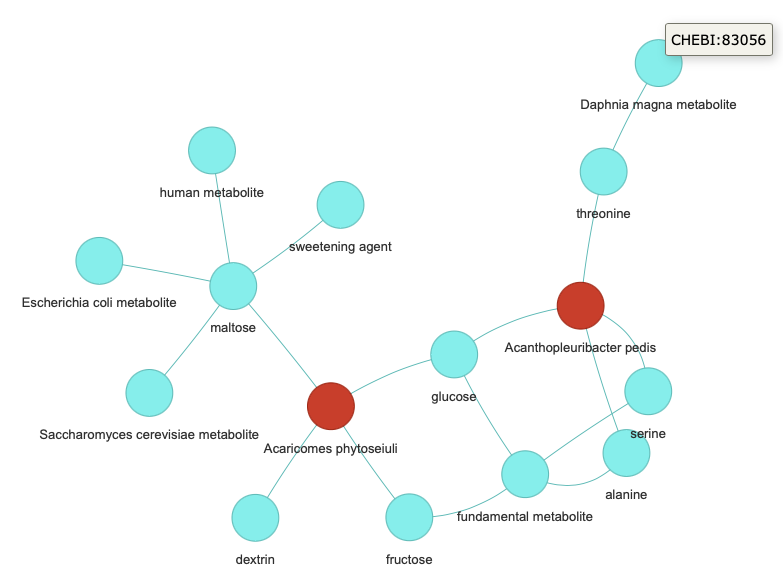

Commands
import: This loads the nodes and edges file into a Neo4j instance. This will take a while depending on the size of the tsv files.poetry run kg import --data-dir data
test-query: To test that the above worked, run a built-in test query:poetry run kg test-query --database neo4j --data-dir data
This should return something like (as per KGX data in the repo):
{'n': {'label': 'Streptomyces thermocarboxydovorans', 'id': 'NCBITaxon:59298'}} {'n': {'label': 'Streptomyces thermocarboxydus', 'id': 'NCBITaxon:59299'}} {'n': {'label': 'Streptomyces thermogriseus', 'id': 'NCBITaxon:75292'}} {'n': {'label': 'Streptomyces thermospinosisporus', 'id': 'NCBITaxon:161482'}} {'n': {'label': 'Streptomyces vitaminophilus', 'id': 'NCBITaxon:76728'}} {'n': {'label': 'Streptomyces yanii', 'id': 'NCBITaxon:78510'}} {'n': {'label': 'Kitasatospora azatica', 'id': 'NCBITaxon:58347'}} {'n': {'label': 'Kitasatospora paracochleata', 'id': 'NCBITaxon:58354'}} {'n': {'label': 'Kitasatospora putterlickiae', 'id': 'NCBITaxon:221725'}} {'n': {'label': 'Kitasatospora sampliensis', 'id': 'NCBITaxon:228655'}}
qna: This command can be used for asking a question about the data and receiving a response.poetry run kg qna "give me the sorted (descending) frequency count nodes with relationships. Give me label and id. I want this as a table " --data-dir data
This should return
> Entering new SQL Agent Executor chain... Invoking: `sql_db_list_tables` with `{}` edges, nodes Invoking: `sql_db_schema` with `{'table_names': 'edges, nodes'}` CREATE TABLE edges ( subject VARCHAR, predicate VARCHAR, object VARCHAR ) /* 3 rows from edges table: subject predicate object NCBITaxon:54261 biolink:capable_of pathway:nitrate_reduction NCBITaxon:2714 biolink:capable_of pathway:nitrate_reduction NCBITaxon:29466 biolink:capable_of pathway:nitrate_reduction */ CREATE TABLE nodes ( id VARCHAR NOT NULL, category VARCHAR, label VARCHAR ) /* 3 rows from nodes table: id category label NCBITaxon:54261 biolink:OrganismTaxon Ferroglobus placidus pathway:nitrate_reduction biolink:BiologicalProcess nitrate_reduction NCBITaxon:2714 biolink:OrganismTaxon Aquifex pyrophilus */ Invoking: `sql_db_query_checker` with `{'query': 'SELECT n.label, n.id, COUNT(e.subject) + COUNT(e.object) AS frequency_count FROM nodes n LEFT JOIN edges e ON n.id = e.subject OR n.id = e.object GROUP BY n.label, n.id ORDER BY frequency_count DESC LIMIT 10;'}` ```sql SELECT n.label, n.id, COUNT(e.subject) + COUNT(e.object) AS frequency_count FROM nodes n LEFT JOIN edges e ON n.id = e.subject OR n.id = e.object GROUP BY n.label, n.id ORDER BY frequency_count DESC LIMIT 10; ``` Invoking: `sql_db_query` with `{'query': 'SELECT n.label, n.id, COUNT(e.subject) + COUNT(e.object) AS frequency_count FROM nodes n LEFT JOIN edges e ON n.id = e.subject OR n.id = e.object GROUP BY n.label, n.id ORDER BY frequency_count DESC LIMIT 10;'}` [('sucrose', 'CHEBI:17992', 31296), ('fundamental metabolite', 'CHEBI:78675', 26354), ('maltose', 'CHEBI:17306', 25920), ('human metabolite', 'CHEBI:77746', 25126), ('Saccharomyces cerevisiae metabolite', 'CHEBI:75772', 21960), ('glycerol', 'CHEBI:17754', 20400), ('Escherichia coli metabolite', 'CHEBI:76971', 19928), ('mouse metabolite', 'CHEBI:75771', 16190), ('plant metabolite', 'CHEBI:76924', 15044), ('mannitol', 'CHEBI:29864', 14530)]Here is the table with the sorted (descending) frequency count of nodes with relationships, including their labels and IDs: | Label | ID | Frequency Count | |---------------------------------|----------------|-----------------| | sucrose | CHEBI:17992 | 31296 | | fundamental metabolite | CHEBI:78675 | 26354 | | maltose | CHEBI:17306 | 25920 | | human metabolite | CHEBI:77746 | 25126 | | Saccharomyces cerevisiae metabolite | CHEBI:75772 | 21960 | | glycerol | CHEBI:17754 | 20400 | | Escherichia coli metabolite | CHEBI:76971 | 19928 | | mouse metabolite | CHEBI:75771 | 16190 | | plant metabolite | CHEBI:76924 | 15044 | | mannitol | CHEBI:29864 | 14530 | > Finished chain. ('Here is the table with the sorted (descending) frequency count of nodes with ' 'relationships, including their labels and IDs:\n' '\n' '| Label | ID | Frequency Count |\n' '|---------------------------------|----------------|-----------------|\n' '| sucrose | CHEBI:17992 | 31296 |\n' '| fundamental metabolite | CHEBI:78675 | 26354 |\n' '| maltose | CHEBI:17306 | 25920 |\n' '| human metabolite | CHEBI:77746 | 25126 |\n' '| Saccharomyces cerevisiae metabolite | CHEBI:75772 | 21960 |\n' '| glycerol | CHEBI:17754 | 20400 |\n' '| Escherichia coli metabolite | CHEBI:76971 | 19928 |\n' '| mouse metabolite | CHEBI:75771 | 16190 |\n' '| plant metabolite | CHEBI:76924 | 15044 |\n' '| mannitol | CHEBI:29864 | 14530 |')
chat: This starts an interactive chat session where you can ask questions about your KG.poetry run kg chat --database neo4j --data-dir data
Gives you the following:
Ask me about your data! :
To quit type
quitorexit.Ask me about your data! : Give me a brief statistic about the table > Entering new GraphCypherQAChain chain... Generated Cypher: MATCH (n:Node)-[r:RELATIONSHIP]->(m:Node) RETURN COUNT(n) AS nodeCount, COUNT(r) AS relationshipCount Full Context: [{'nodeCount': 598598, 'relationshipCount': 598598}] > Finished chain. 'The table contains 598,598 nodes and 598,598 relationships.' Ask me about your data! : give me a table of the 5 most frequent relationships > Entering new GraphCypherQAChain chain... Generated Cypher: cypher MATCH ()-[r:RELATIONSHIP]->() RETURN r.type AS RelationshipType, COUNT(r) AS Frequency ORDER BY Frequency DESC LIMIT 5 Full Context: [{'RelationshipType': 'biolink:capable_of', 'Frequency': 225052}, {'RelationshipType': 'biolink:location_of', 'Frequency': 187104}, {'RelationshipType': 'biolink:consumes', 'Frequency': 107037}, {'RelationshipType': 'biolink:has_phenotype', 'Frequency': 79168}, {'RelationshipType': 'biolink:has_chemical_role', 'Frequency': 237}] > Finished chain. ('| Relationship Type | Frequency |\n' '|------------------------------|-----------|\n' '| biolink:capable_of | 225052 |\n' '| biolink:location_of | 187104 |\n' '| biolink:consumes | 107037 |\n' '| biolink:has_phenotype | 79168 |\n' '| biolink:has_chemical_role | 237 |') Ask me about your data! : Give me node IDs and labels of any 10 nodes that have the word strep in it > Entering new GraphCypherQAChain chain... Generated Cypher: cypher MATCH (n:Node) WHERE n.label CONTAINS 'strep' RETURN n.id, n.label LIMIT 10 Full Context: [{'n.id': 'NCBITaxon:33035', 'n.label': 'Peptostreptococcus productus'}, {'n.id': 'NCBITaxon:596329', 'n.label': 'Peptostreptococcus anaerobius 653-L'}, {'n.id': 'NCBITaxon:1261', 'n.label': 'Peptostreptococcus anaerobius'}, {'n.id': 'NCBITaxon:596315', 'n.label': 'Peptostreptococcus stomatis DSM 17678'}, {'n.id': 'NCBITaxon:1262', 'n.label': 'Peptostreptococcus sp. 2'}, {'n.id': 'NCBITaxon:1261', 'n.label': 'Peptostreptococcus anaerobius 0009-10 Hillier'}, {'n.id': 'NCBITaxon:1262', 'n.label': 'Peptostreptococcus sp. ACS-065-V-Col13'}, {'n.id': 'NCBITaxon:796937', 'n.label': 'Peptostreptococcaceae bacterium CM2'}, {'n.id': 'NCBITaxon:796937', 'n.label': 'Peptostreptococcaceae bacterium ACC19a'}, {'n.id': 'NCBITaxon:796937', 'n.label': 'Peptostreptococcaceae bacterium CM5'}] > Finished chain. ('Here are the node IDs and labels of 10 nodes that have the word "strep" in ' 'them:\n' '\n' '1. NCBITaxon:33035 - Peptostreptococcus productus\n' '2. NCBITaxon:596329 - Peptostreptococcus anaerobius 653-L\n' '3. NCBITaxon:1261 - Peptostreptococcus anaerobius\n' '4. NCBITaxon:596315 - Peptostreptococcus stomatis DSM 17678\n' '5. NCBITaxon:1262 - Peptostreptococcus sp. 2\n' '6. NCBITaxon:1261 - Peptostreptococcus anaerobius 0009-10 Hillier\n' '7. NCBITaxon:1262 - Peptostreptococcus sp. ACS-065-V-Col13\n' '8. NCBITaxon:796937 - Peptostreptococcaceae bacterium CM2\n' '9. NCBITaxon:796937 - Peptostreptococcaceae bacterium ACC19a\n' '10. NCBITaxon:796937 - Peptostreptococcaceae bacterium CM5')
If the prompt has the phrase
show mein it,kg-chatwould render an HTML output with KG representation of the response.kg-chat $ poetry run kg chat --data-dir data Ask me about your data! : show me 20 edges with subject prefix = CHEBI > Entering new SQL Agent Executor chain... Invoking: `sql_db_list_tables` with `{}` edges, nodes Invoking: `sql_db_schema` with `{'table_names': 'edges, nodes'}` CREATE TABLE edges ( subject VARCHAR, predicate VARCHAR, object VARCHAR ) /* 3 rows from edges table: subject predicate object NCBITaxon:54261 biolink:capable_of pathway:nitrate_reduction NCBITaxon:2714 biolink:capable_of pathway:nitrate_reduction NCBITaxon:29466 biolink:capable_of pathway:nitrate_reduction */ CREATE TABLE nodes ( id VARCHAR NOT NULL, category VARCHAR, label VARCHAR ) /* 3 rows from nodes table: id category label NCBITaxon:54261 biolink:OrganismTaxon Ferroglobus placidus pathway:nitrate_reduction biolink:BiologicalProcess nitrate_reduction NCBITaxon:2714 biolink:OrganismTaxon Aquifex pyrophilus */ Invoking: `sql_db_query_checker` with `{'query': "SELECT * FROM edges WHERE subject LIKE 'CHEBI%' LIMIT 20"}` ```sql SELECT * FROM edges WHERE subject LIKE 'CHEBI%' LIMIT 20 ``` Invoking: `sql_db_query` with `{'query': "SELECT * FROM edges WHERE subject LIKE 'CHEBI%' LIMIT 20"}` [('CHEBI:16449', 'biolink:location_of', 'NCBITaxon:442870'), ('CHEBI:16449', 'biolink:has_chemical_role', 'CHEBI:78675'), ('CHEBI:16449', 'biolink:location_of', 'NCBITaxon:442870'), ('CHEBI:16449', 'biolink:has_chemical_role', 'CHEBI:78675'), ('CHEBI:17234', 'biolink:location_of', 'NCBITaxon:442870'), ('CHEBI:17234', 'biolink:has_chemical_role', 'CHEBI:78675'), ('CHEBI:17822', 'biolink:location_of', 'NCBITaxon:442870'), ('CHEBI:17822', 'biolink:has_chemical_role', 'CHEBI:78675'), ('CHEBI:26986', 'biolink:location_of', 'NCBITaxon:442870'), ('CHEBI:26986', 'biolink:has_chemical_role', 'CHEBI:83056'), ('CHEBI:28675', 'biolink:location_of', 'NCBITaxon:291968'), ('CHEBI:28757', 'biolink:location_of', 'NCBITaxon:291968'), ('CHEBI:28757', 'biolink:has_chemical_role', 'CHEBI:78675'), ('CHEBI:17234', 'biolink:location_of', 'NCBITaxon:291968'), ('CHEBI:17234', 'biolink:has_chemical_role', 'CHEBI:78675'), ('CHEBI:17306', 'biolink:location_of', 'NCBITaxon:291968'), ('CHEBI:17306', 'biolink:has_chemical_role', 'CHEBI:77746'), ('CHEBI:17306', 'biolink:has_chemical_role', 'CHEBI:50505'), ('CHEBI:17306', 'biolink:has_chemical_role', 'CHEBI:76971'), ('CHEBI:17306', 'biolink:has_chemical_role', 'CHEBI:75772')] Invoking: `sql_db_query` with `{'query': "SELECT * FROM nodes WHERE id IN ('CHEBI:16449', 'NCBITaxon:442870', 'CHEBI:78675', 'CHEBI:17234', 'CHEBI:17822', 'CHEBI:26986', 'CHEBI:83056', 'CHEBI:28675', 'NCBITaxon:291968', 'CHEBI:28757', 'CHEBI:17306', 'CHEBI:77746', 'CHEBI:50505', 'CHEBI:76971', 'CHEBI:75772')"}` [('NCBITaxon:442870', 'biolink:OrganismTaxon', 'Acanthopleuribacter pedis'), ('CHEBI:16449', 'biolink:ChemicalEntity', 'alanine'), ('CHEBI:78675', 'biolink:ChemicalRole', 'fundamental metabolite'), ('CHEBI:17234', 'biolink:ChemicalEntity', 'glucose'), ('CHEBI:17822', 'biolink:ChemicalEntity', 'serine'), ('CHEBI:26986', 'biolink:ChemicalEntity', 'threonine'), ('CHEBI:83056', 'biolink:ChemicalRole', 'Daphnia magna metabolite'), ('NCBITaxon:291968', 'biolink:OrganismTaxon', 'Acaricomes phytoseiuli'), ('CHEBI:28675', 'biolink:ChemicalEntity', 'dextrin'), ('CHEBI:28757', 'biolink:ChemicalEntity', 'fructose'), ('CHEBI:17306', 'biolink:ChemicalEntity', 'maltose'), ('CHEBI:77746', 'biolink:ChemicalRole', 'human metabolite'), ('CHEBI:50505', 'biolink:ChemicalRole', 'sweetening agent'), ('CHEBI:76971', 'biolink:ChemicalRole', 'Escherichia coli metabolite'), ('CHEBI:75772', 'biolink:ChemicalRole', 'Saccharomyces cerevisiae metabolite')]```json { "nodes": [ {"label": "alanine", "id": "CHEBI:16449", "category": "biolink:ChemicalEntity"}, {"label": "Acanthopleuribacter pedis", "id": "NCBITaxon:442870", "category": "biolink:OrganismTaxon"}, {"label": "fundamental metabolite", "id": "CHEBI:78675", "category": "biolink:ChemicalRole"}, {"label": "glucose", "id": "CHEBI:17234", "category": "biolink:ChemicalEntity"}, {"label": "serine", "id": "CHEBI:17822", "category": "biolink:ChemicalEntity"}, {"label": "threonine", "id": "CHEBI:26986", "category": "biolink:ChemicalEntity"}, {"label": "Daphnia magna metabolite", "id": "CHEBI:83056", "category": "biolink:ChemicalRole"}, {"label": "Acaricomes phytoseiuli", "id": "NCBITaxon:291968", "category": "biolink:OrganismTaxon"}, {"label": "dextrin", "id": "CHEBI:28675", "category": "biolink:ChemicalEntity"}, {"label": "fructose", "id": "CHEBI:28757", "category": "biolink:ChemicalEntity"}, {"label": "maltose", "id": "CHEBI:17306", "category": "biolink:ChemicalEntity"}, {"label": "human metabolite", "id": "CHEBI:77746", "category": "biolink:ChemicalRole"}, {"label": "sweetening agent", "id": "CHEBI:50505", "category": "biolink:ChemicalRole"}, {"label": "Escherichia coli metabolite", "id": "CHEBI:76971", "category": "biolink:ChemicalRole"}, {"label": "Saccharomyces cerevisiae metabolite", "id": "CHEBI:75772", "category": "biolink:ChemicalRole"} ], "edges": [ {"subject": {"label": "alanine", "id": "CHEBI:16449"}, "object": {"label": "Acanthopleuribacter pedis", "id": "NCBITaxon:442870"}, "predicate": "biolink:location_of"}, {"subject": {"label": "alanine", "id": "CHEBI:16449"}, "object": {"label": "fundamental metabolite", "id": "CHEBI:78675"}, "predicate": "biolink:has_chemical_role"}, {"subject": {"label": "alanine", "id": "CHEBI:16449"}, "object": {"label": "Acanthopleuribacter pedis", "id": "NCBITaxon:442870"}, "predicate": "biolink:location_of"}, {"subject": {"label": "alanine", "id": "CHEBI:16449"}, "object": {"label": "fundamental metabolite", "id": "CHEBI:78675"}, "predicate": "biolink:has_chemical_role"}, {"subject": {"label": "glucose", "id": "CHEBI:17234"}, "object": {"label": "Acanthopleuribacter pedis", "id": "NCBITaxon:442870"}, "predicate": "biolink:location_of"}, {"subject": {"label": "glucose", "id": "CHEBI:17234"}, "object": {"label": "fundamental metabolite", "id": "CHEBI:78675"}, "predicate": "biolink:has_chemical_role"}, {"subject": {"label": "serine", "id": "CHEBI:17822"}, "object": {"label": "Acanthopleuribacter pedis", "id": "NCBITaxon:442870"}, "predicate": "biolink:location_of"}, {"subject": {"label": "serine", "id": "CHEBI:17822"}, "object": {"label": "fundamental metabolite", "id": "CHEBI:78675"}, "predicate": "biolink:has_chemical_role"}, {"subject": {"label": "threonine", "id": "CHEBI:26986"}, "object": {"label": "Acanthopleuribacter pedis", "id": "NCBITaxon:442870"}, "predicate": "biolink:location_of"}, {"subject": {"label": "threonine", "id": "CHEBI:26986"}, "object": {"label": "Daphnia magna metabolite", "id": "CHEBI:83056"}, "predicate": "biolink:has_chemical_role"}, {"subject": {"label": "dextrin", "id": "CHEBI:28675"}, "object": {"label": "Acaricomes phytoseiuli", "id": "NCBITaxon:291968"}, "predicate": "biolink:location_of"}, {"subject": {"label": "fructose", "id": "CHEBI:28757"}, "object": {"label": "Acaricomes phytoseiuli", "id": "NCBITaxon:291968"}, "predicate": "biolink:location_of"}, {"subject": {"label": "fructose", "id": "CHEBI:28757"}, "object": {"label": "fundamental metabolite", "id": "CHEBI:78675"}, "predicate": "biolink:has_chemical_role"}, {"subject": {"label": "glucose", "id": "CHEBI:17234"}, "object": {"label": "Acaricomes phytoseiuli", "id": "NCBITaxon:291968"}, "predicate": "biolink:location_of"}, {"subject": {"label": "glucose", "id": "CHEBI:17234"}, "object": {"label": "fundamental metabolite", "id": "CHEBI:78675"}, "predicate": "biolink:has_chemical_role"}, {"subject": {"label": "maltose", "id": "CHEBI:17306"}, "object": {"label": "Acaricomes phytoseiuli", "id": "NCBITaxon:291968"}, "predicate": "biolink:location_of"}, {"subject": {"label": "maltose", "id": "CHEBI:17306"}, "object": {"label": "human metabolite", "id": "CHEBI:77746"}, "predicate": "biolink:has_chemical_role"}, {"subject": {"label": "maltose", "id": "CHEBI:17306"}, "object": {"label": "sweetening agent", "id": "CHEBI:50505"}, "predicate": "biolink:has_chemical_role"}, {"subject": {"label": "maltose", "id": "CHEBI:17306"}, "object": {"label": "Escherichia coli metabolite", "id": "CHEBI:76971"}, "predicate": "biolink:has_chemical_role"}, {"subject": {"label": "maltose", "id": "CHEBI:17306"}, "object": {"label": "Saccharomyces cerevisiae metabolite", "id": "CHEBI:75772"}, "predicate": "biolink:has_chemical_role"} ] } ``` > Finished chain. ('```json\n' '{\n' ' "nodes": [\n' ' {"label": "alanine", "id": "CHEBI:16449", "category": ' '"biolink:ChemicalEntity"},\n' ' {"label": "Acanthopleuribacter pedis", "id": "NCBITaxon:442870", ' '"category": "biolink:OrganismTaxon"},\n' ' {"label": "fundamental metabolite", "id": "CHEBI:78675", "category": ' '"biolink:ChemicalRole"},\n' ' {"label": "glucose", "id": "CHEBI:17234", "category": ' '"biolink:ChemicalEntity"},\n' ' {"label": "serine", "id": "CHEBI:17822", "category": ' '"biolink:ChemicalEntity"},\n' ' {"label": "threonine", "id": "CHEBI:26986", "category": ' '"biolink:ChemicalEntity"},\n' ' {"label": "Daphnia magna metabolite", "id": "CHEBI:83056", ' '"category": "biolink:ChemicalRole"},\n' ' {"label": "Acaricomes phytoseiuli", "id": "NCBITaxon:291968", ' '"category": "biolink:OrganismTaxon"},\n' ' {"label": "dextrin", "id": "CHEBI:28675", "category": ' '"biolink:ChemicalEntity"},\n' ' {"label": "fructose", "id": "CHEBI:28757", "category": ' '"biolink:ChemicalEntity"},\n' ' {"label": "maltose", "id": "CHEBI:17306", "category": ' '"biolink:ChemicalEntity"},\n' ' {"label": "human metabolite", "id": "CHEBI:77746", "category": ' '"biolink:ChemicalRole"},\n' ' {"label": "sweetening agent", "id": "CHEBI:50505", "category": ' '"biolink:ChemicalRole"},\n' ' {"label": "Escherichia coli metabolite", "id": "CHEBI:76971", ' '"category": "biolink:ChemicalRole"},\n' ' {"label": "Saccharomyces cerevisiae metabolite", "id": ' '"CHEBI:75772", "category": "biolink:ChemicalRole"}\n' ' ],\n' ' "edges": [\n' ' {"subject": {"label": "alanine", "id": "CHEBI:16449"}, "object": ' '{"label": "Acanthopleuribacter pedis", "id": "NCBITaxon:442870"}, ' '"predicate": "biolink:location_of"},\n' ' {"subject": {"label": "alanine", "id": "CHEBI:16449"}, "object": ' '{"label": "fundamental metabolite", "id": "CHEBI:78675"}, "predicate": ' '"biolink:has_chemical_role"},\n' ' {"subject": {"label": "alanine", "id": "CHEBI:16449"}, "object": ' '{"label": "Acanthopleuribacter pedis", "id": "NCBITaxon:442870"}, ' '"predicate": "biolink:location_of"},\n' ' {"subject": {"label": "alanine", "id": "CHEBI:16449"}, "object": ' '{"label": "fundamental metabolite", "id": "CHEBI:78675"}, "predicate": ' '"biolink:has_chemical_role"},\n' ' {"subject": {"label": "glucose", "id": "CHEBI:17234"}, "object": ' '{"label": "Acanthopleuribacter pedis", "id": "NCBITaxon:442870"}, ' '"predicate": "biolink:location_of"},\n' ' {"subject": {"label": "glucose", "id": "CHEBI:17234"}, "object": ' '{"label": "fundamental metabolite", "id": "CHEBI:78675"}, "predicate": ' '"biolink:has_chemical_role"},\n' ' {"subject": {"label": "serine", "id": "CHEBI:17822"}, "object": ' '{"label": "Acanthopleuribacter pedis", "id": "NCBITaxon:442870"}, ' '"predicate": "biolink:location_of"},\n' ' {"subject": {"label": "serine", "id": "CHEBI:17822"}, "object": ' '{"label": "fundamental metabolite", "id": "CHEBI:78675"}, "predicate": ' '"biolink:has_chemical_role"},\n' ' {"subject": {"label": "threonine", "id": "CHEBI:26986"}, "object": ' '{"label": "Acanthopleuribacter pedis", "id": "NCBITaxon:442870"}, ' '"predicate": "biolink:location_of"},\n' ' {"subject": {"label": "threonine", "id": "CHEBI:26986"}, "object": ' '{"label": "Daphnia magna metabolite", "id": "CHEBI:83056"}, "predicate": ' '"biolink:has_chemical_role"},\n' ' {"subject": {"label": "dextrin", "id": "CHEBI:28675"}, "object": ' '{"label": "Acaricomes phytoseiuli", "id": "NCBITaxon:291968"}, "predicate": ' '"biolink:location_of"},\n' ' {"subject": {"label": "fructose", "id": "CHEBI:28757"}, "object": ' '{"label": "Acaricomes phytoseiuli", "id": "NCBITaxon:291968"}, "predicate": ' '"biolink:location_of"},\n' ' {"subject": {"label": "fructose", "id": "CHEBI:28757"}, "object": ' '{"label": "fundamental metabolite", "id": "CHEBI:78675"}, "predicate": ' '"biolink:has_chemical_role"},\n' ' {"subject": {"label": "glucose", "id": "CHEBI:17234"}, "object": ' '{"label": "Acaricomes phytoseiuli", "id": "NCBITaxon:291968"}, "predicate": ' '"biolink:location_of"},\n' ' {"subject": {"label": "glucose", "id": "CHEBI:17234"}, "object": ' '{"label": "fundamental metabolite", "id": "CHEBI:78675"}, "predicate": ' '"biolink:has_chemical_role"},\n' ' {"subject": {"label": "maltose", "id": "CHEBI:17306"}, "object": ' '{"label": "Acaricomes phytoseiuli", "id": "NCBITaxon:291968"}, "predicate": '
‘“biolink:location_of”},n’ ‘ {“subject”: {“label”: “maltose”, “id”: “CHEBI:17306”}, “object”: ‘ ‘{“label”: “human metabolite”, “id”: “CHEBI:77746”}, “predicate”: ‘ ‘“biolink:has_chemical_role”},n’ ‘ {“subject”: {“label”: “maltose”, “id”: “CHEBI:17306”}, “object”: ‘ ‘{“label”: “sweetening agent”, “id”: “CHEBI:50505”}, “predicate”: ‘ ‘“biolink:has_chemical_role”},n’ ‘ {“subject”: {“label”: “maltose”, “id”: “CHEBI:17306”}, “object”: ‘ ‘{“label”: “Escherichia coli metabolite”, “id”: “CHEBI:76971”}, “predicate”: ‘ ‘“biolink:has_chemical_role”},n’ ‘ {“subject”: {“label”: “maltose”, “id”: “CHEBI:17306”}, “object”: ‘ ‘{“label”: “Saccharomyces cerevisiae metabolite”, “id”: “CHEBI:75772”}, ‘ ‘“predicate”: “biolink:has_chemical_role”}n’ ‘ ]n’ ‘}n’ ‘```’)
../kg-chat/src/kg_chat/graph_output/knowledge_graph.html Ask me about your data! :
This results in the formation of the knowledge_graph.html file.

app: This command can be used to start the KG chat app.poetry run kg app --data-dir data
This will start the app on http://localhost:8050/ which can be accessed in the browser.
Example: